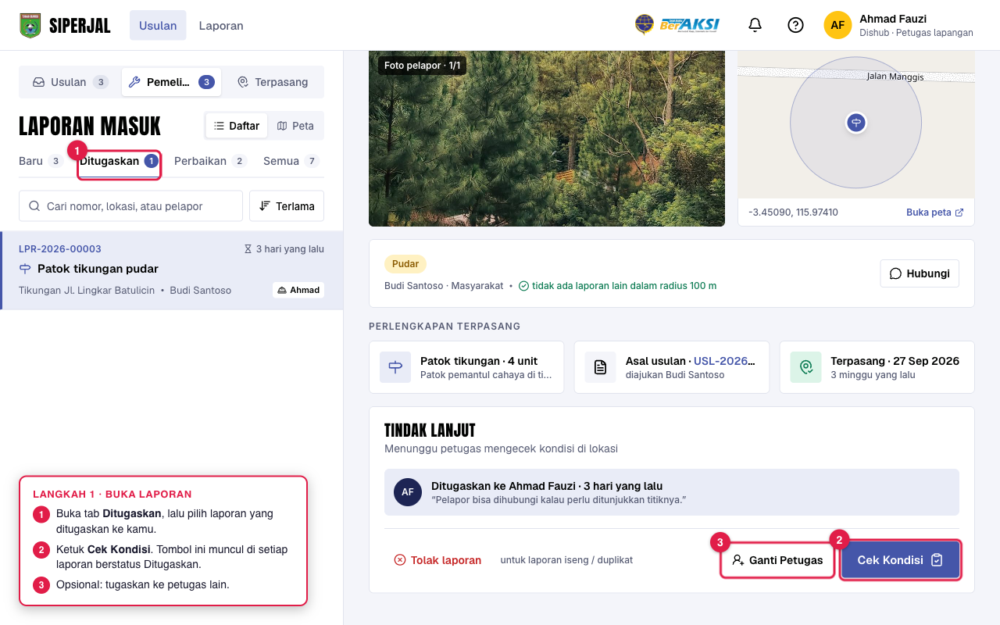
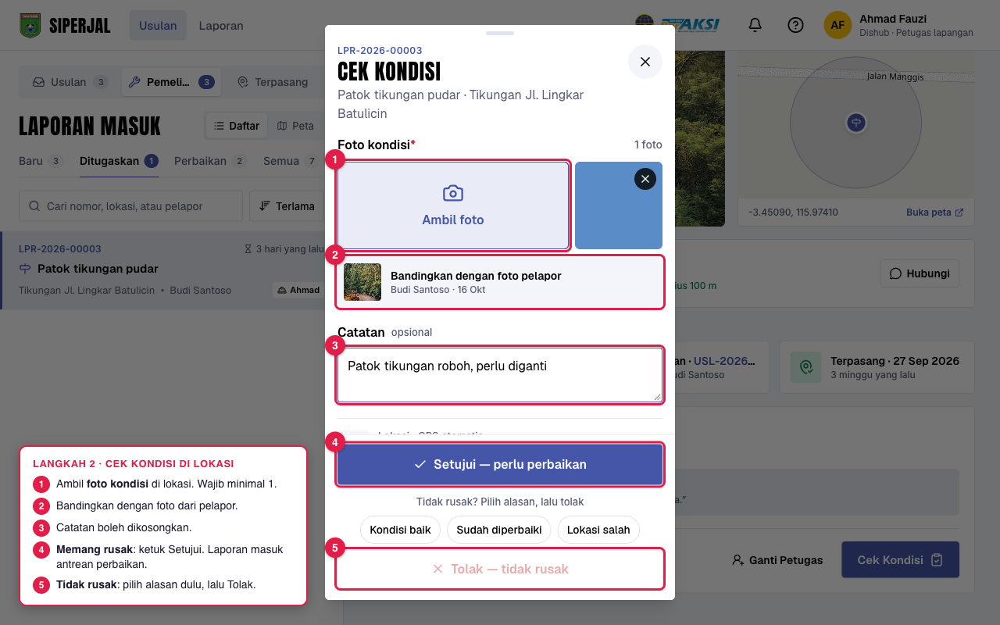
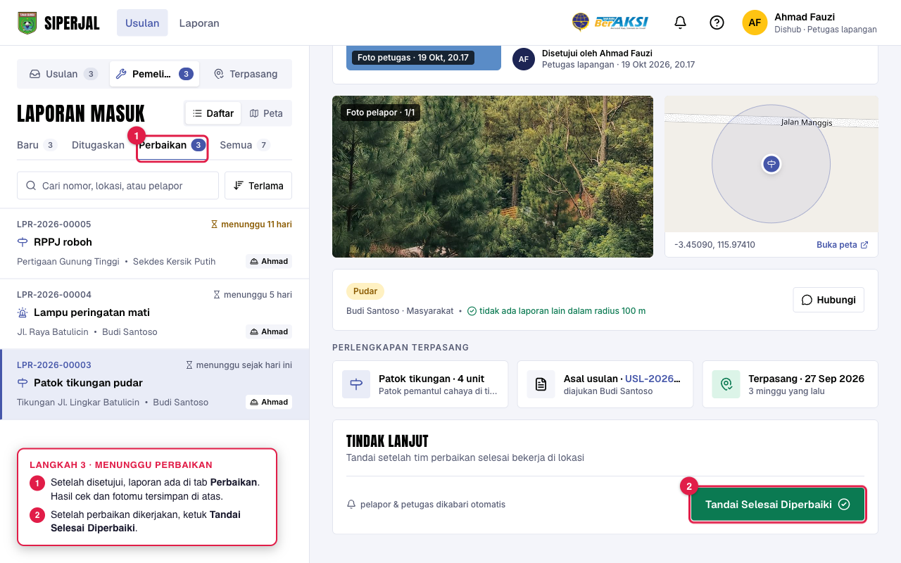
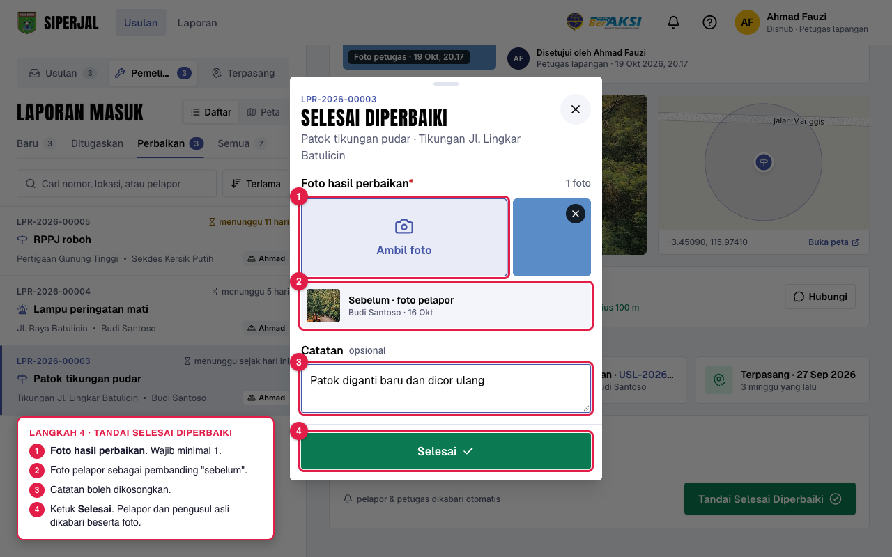
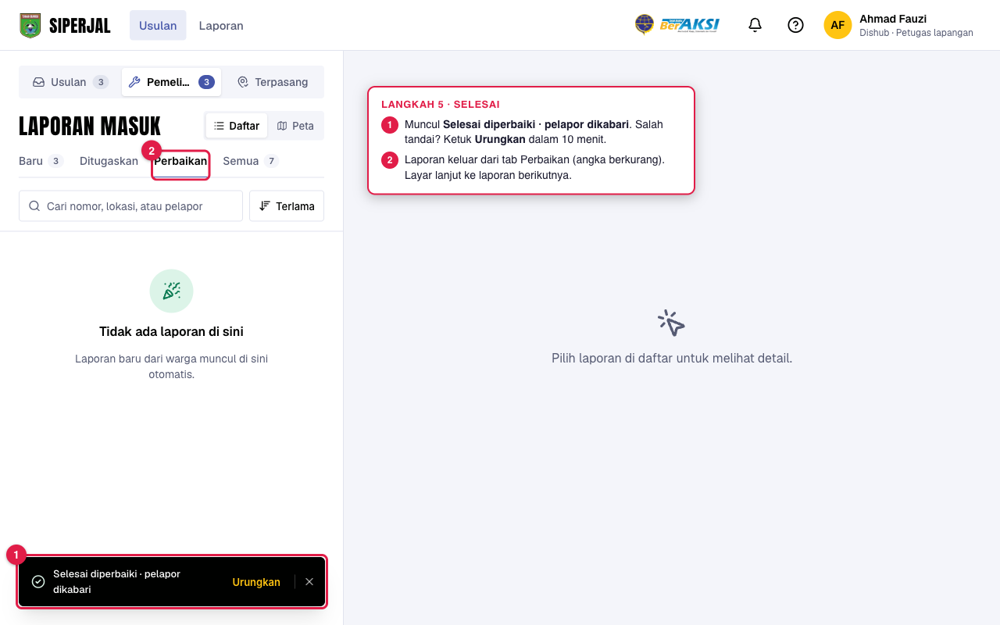
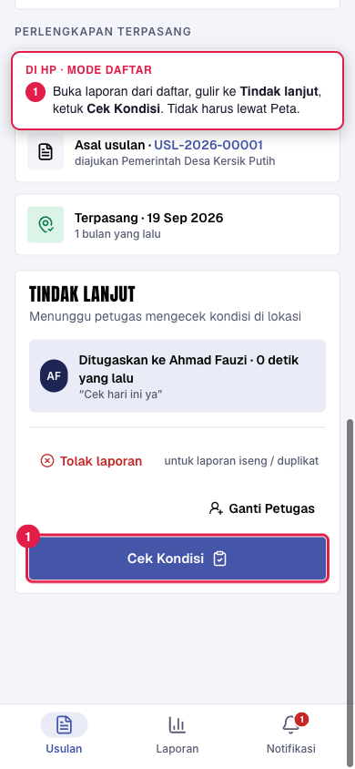
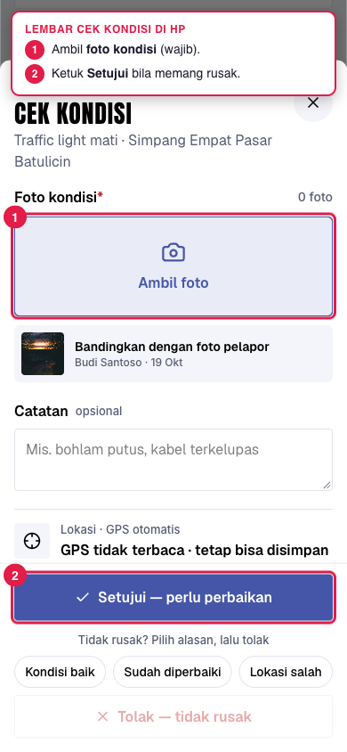
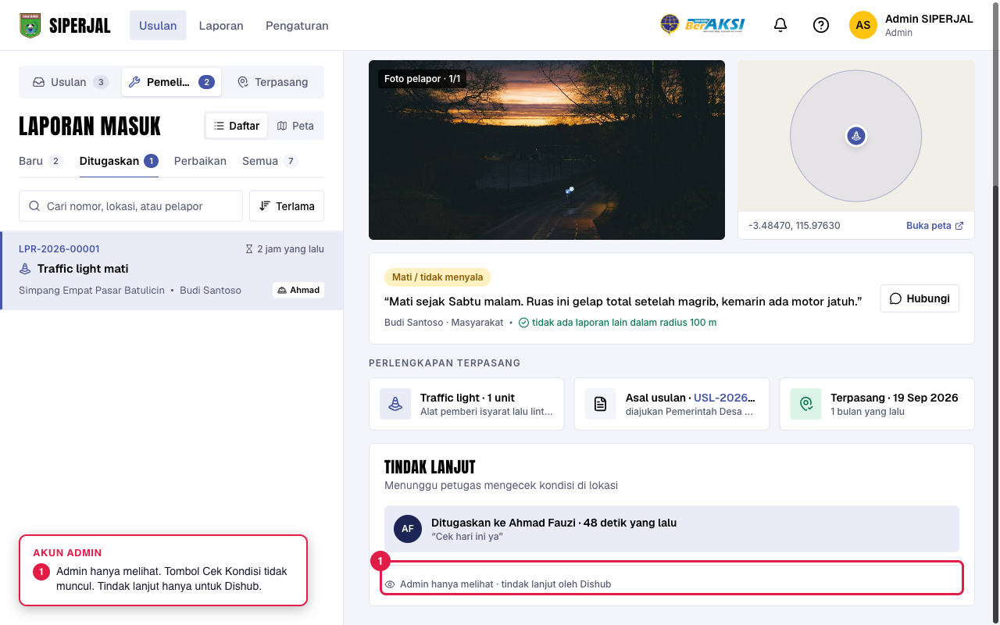

Jawaban atas pertanyaan tentang tombol Cek Kondisi dan Selesai Diperbaiki: apa yang terjadi, apa yang diperbaiki, dan langkah pakainya.
Tombol ini tidak ada di sini. Itu sebabnya terasa “kosong”.


| Isian | Keterangan |
|---|---|
| WAJIBFoto kondisi | Minimal 1 foto kondisi sekarang. Bisa ambil lewat kamera HP atau pilih dari berkas. |
| OPSIONALCatatan | Contoh: “Patok tikungan roboh, perlu diganti”. Maksimal 300 karakter. |
| OTOMATISLokasi GPS | Dicatat sendiri untuk menunjukkan jarak dari titik laporan. Kalau GPS tidak terbaca, tetap bisa disimpan. |
| PILIH SATUSetujui atau Tolak | Setujui: masuk antrean perbaikan. Tolak: pilih alasan (Kondisi baik, Sudah diperbaiki, Lokasi salah). |
Pelapor dikabari saat laporan disetujui.

Foto hasil kini wajib juga di desktop, sama seperti di HP.

Klik Urungkan di pesan itu dalam 10 menit. Status kembali ke Menunggu perbaikan.
Pelapor dan pengusul asli, beserta foto sebelum dan sesudah.

Lewat Peta di tab Ditugaskan atau Perbaikan, tombolnya tetap ada di kartu titik. Cocok saat di jalan.


Dishub (petugas lapangan atau koordinator).
Cek Kondisi hanya muncul bila status Ditugaskan. Setelah Setujui, tombolnya berganti Tandai Selesai Diperbaiki.

Panduan lengkap: menu ? → Petugas lapangan → “Mengecek laporan kerusakan”.